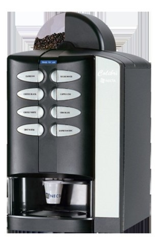
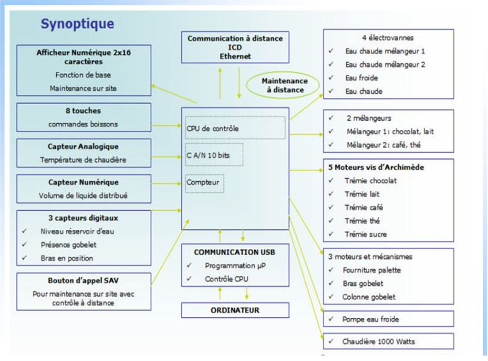

Séquence D - Electronique et systèmes intelligents - Activité 3 Algorithmique
"Quels sont les composants qui rendent le COLIBRI intelligent ?"
"Comment est programmé le COLOBRI ?"
🎯 Compétences visées
C03 - Être capable d'identifier les fonctions des différents constituants de la chaîne d'information.
C03 - Être capable d'identifier les entrées/sorties du système physique dans la perspective de l'écriture de l'algorithme.
C03 - Être capable d'interpréter/comprendre une partie du programme et les E/S.
C04 - Être capable d'identifier la structure d'un programme.
🛠️ Matériels et ressources
- ⚡ Logiciel Arduino
- 🖥️ Carte Arduino + platine Grove
- 📡 Capteurs et actionneurs Grove :
- 3 modules « LED » (rouge, vert, bleu)
- 1 module « buzzer » (dispositif piézoélectrique qui émet des sons)
- 2 modules « button » (boutons poussoirs)
- 📄 Documents : DT-Arduino, DT-Algorigramme, DR-Algorithmique
- 🎥 Vidéos de découverte de l'Arduino (écouteurs recommandés)
❓ Problématique
Le Colibri est une machine qui prépare et distribue des boissons chaudes à la demande. Son système interne permet de commander une boisson, de préparer la boisson, de chauffer ou pas la boisson, de la sucrer plus ou moins en fonction de la demande du consommateur.

🧠 Questions clés :
- Quels sont les composants qui rendent le COLIBRI intelligent ?
- Comment est programmé le COLIBRI ?
👥 Organisation
📋 Rendu attendu
Le document réponse « DR-Algorithmique » complété
🎯 Objectif de l'activité
Durant cette activité, vous allez découvrir le logiciel et le matériel Arduino associés à une platine Grove. L'étude du fonctionnement de la machine à café COLIBRI et la simulation de certaines fonctionnalités va vous permettre de programmer les différentes structures algorithmiques. Ces dernières sont la base de la programmation, quel que soit le langage utilisé.
🚀 1. Structure du système
Le synoptique de la machine à café est le suivant :

📝 Travail demandé :
A l'aide du synoptique ci-dessus, compléter le schéma structurel du système sur le DR-Algorithmique :
- 🔵 Bleu : éléments du pupitre donnant des ordres au microcontrôleur
- 🟡 Jaune : éléments du pupitre donnant des informations au microcontrôleur
- 🟢 Vert : capteurs (informations → microcontrôleur)
- 🔴 Rouge : actionneurs (transforment l'énergie Ex: Moteur)
- 🩷 Rose : effecteurs (réalisent l'action Ex: turbine)
🧠 2. Le microcontrôleur - Recherche
Le COLIBRI est composé d'un microcontrôleur. Ce composant est « au centre » du système.
A l'aide d'une recherche Internet, indiquer sur le DR-Algorithmique :
- Qu'est-ce qu'un microcontrôleur ?
- De quoi est-il composé ?
- Quelle est la différence avec un microprocesseur ?
- Citer quelques systèmes équipés d'un microcontrôleur ?